体育场地:竞技水平的硬件支撑
体育场地是竞技体育发展的核心载体。2003-2025年,全国体育场地数量从85.01万个增长至500.37万个,人均体育场地面积从1.03m2提升至3.11m2。
场地普及推动了全民健身的深度覆盖,大幅扩大了体育人口规模,形成了"全民健身→人才选拔→专业培养→奥运夺牌"的良性循环。
四十载奥运逐梦 见证大国体育成长
1984年,许海峰夺得中国首枚奥运金牌,终结了中国奥运无金的历史。但彼时的中国竞技体育,存在鲜明的结构性短板:夺牌高度依赖举重、射击、体操等少数低成本传统项目,多数竞技项目实力薄弱,冬季项目几乎处于空白状态。
历经四十载风雨迭代,中国体育彻底改写发展格局。夏季奥运会突破项目壁垒,冬季奥运会实现从无到有、从弱到强的跨越式发展,完成夏强冬弱、单项偏科到冬夏双盛、全域开花的历史性跨越。
四十年奖牌数量与项目结构的巨变,绝非偶然的赛场突破。奖牌更迭的背后,是国家经济实力的底层托举、体育人才体系的深度重构、顶层体育政策的持续赋能。本文将以数据变迁为窗口,层层拆解中国体育四十年跃升的深层密码。
探索40年奥运背后的故事
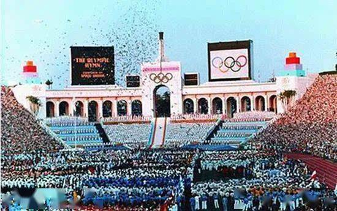
许海峰一枪定乾坤,中国奥运金牌史就此改写
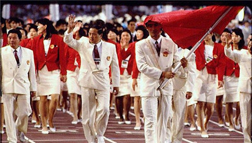
夏奥16金,冬奥首获奖牌,中国体育开启双奥时代
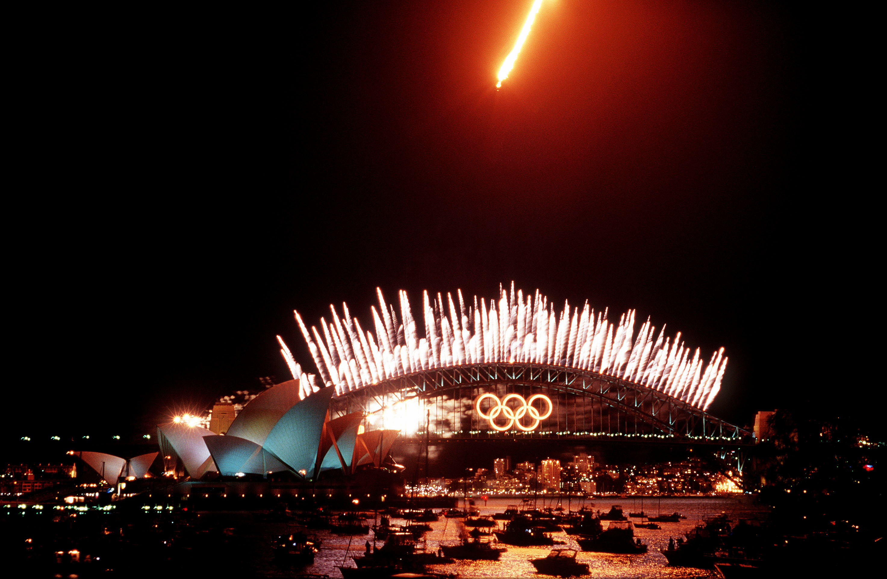
悉尼奥运28金,金牌榜首次进入前三,体育大国地位稳固
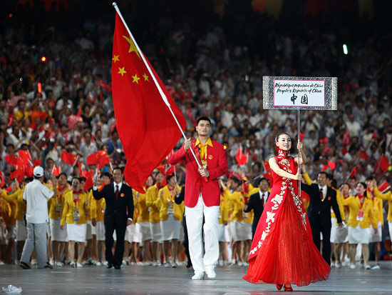
北京奥运48金,首次登上金牌榜榜首,中国体育的巅峰时刻
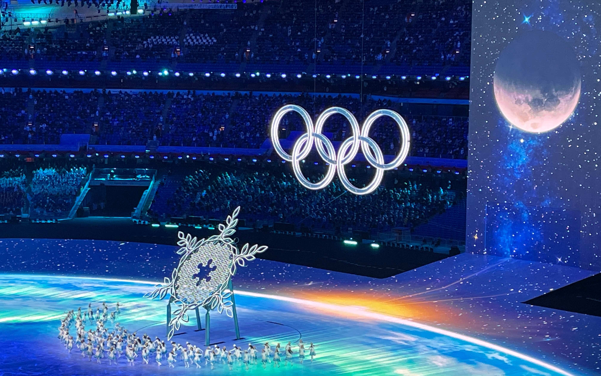
北京冬奥9金创历史,从"冬奥看客"到"冰雪强国"的跨越
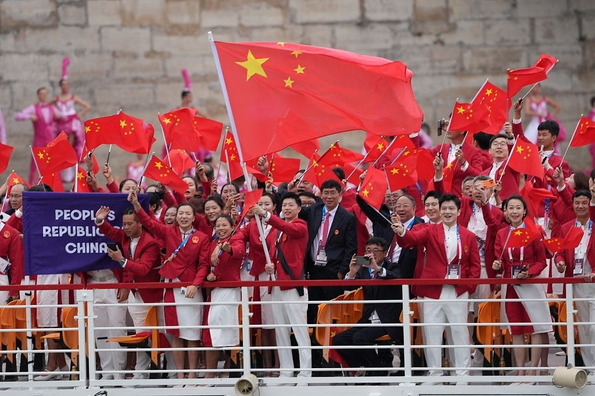
巴黎奥运40金创境外最佳,夏奥+冬奥双线开花
探索40年奥运背后的故事
1984-2024年历届夏季奥运会中国金牌数动态变化
1992-2022年历届冬季奥运会中国金牌数动态变化
双奥数据的结构性变迁,是中国体育实力跃升最直观、最外化的呈现。1984年洛杉矶奥运会,中国15枚金牌全部来自体操、举重、射击三个项目;到2024年巴黎奥运会,40枚金牌分布在跳水、乒乓球、举重、游泳、射击、体操、拳击等20余个大项,实现了从"单点突围"到"多点覆盖"的根本性转变。
👆 悬停卡片查看详情
改革开放初期,国内体育资源有限,竞技体育采取优势项目优先发展策略,奖牌高度集中在4-5个传统王牌项目。近四十年,随着体育综合实力提升,传统优势项目持续稳固统治力,曾经的短板项目不断取得历史性突破,呈现多领域、多项目、多层次的开花态势。
数据来源：中国奥委会官网；2022年北京冬奥会官方数据
相较于夏季项目,我国冬季竞技体育起步晚、基础薄,二十年前几乎无核心竞争力,是中国体育最突出的短板领域。伴随国家冰雪运动战略推进,冬季项目完成跨越式发展:2022年北京冬奥会斩获9金4银2铜,刷新历史最佳战绩,补齐了中国体育的最大短板。
数据来源：中国奥委会官网；2022年北京冬奥会官方数据
矩形面积代表各项目历届夏季奥运会累计金牌数量
数据来源：中国奥委会官网；中国奥委会体育博物馆
跳水、举重、乒乓球、体操、射击五大传统项目金牌总量遥遥领先,构筑起中国奥运金牌稳定基本盘。这类项目入门选材体系成熟、国内联赛梯队完善,精细化专项训练模式成熟,长期保持国际统治力。游泳、羽毛球形成次级夺金增长点,市场化职业赛事带动人才持续涌现;而田径、重格斗类等项目金牌偏少,受制于人种天赋、群众普及度、起步发展时间短等短板,整体竞争力仍有提升空间。
矩形面积代表金牌数量。红色系为传统"梦之队",蓝色系为基础大项及新突破。
数据来源：中国奥委会官网；中国奥委会体育博物馆
2008北京本土主场赛事里,传统强项全面爆发、集体收获丰厚金牌,本土作战的场地适配、群众氛围加持,让体操、举重、跳水成为当届核心得分点,小众项目多点开花,造就金牌数量巅峰。 对比2024巴黎境外赛事,夺金结构出现明显转型,跳水依旧保持统治地位,射击、乒乓球稳定兜底,拳击、皮划艇、花样游泳等新兴项目实现金牌突破,传统大项发挥收缩,反映出我国奥运竞技布局正逐步拓宽赛道,多元化夺金格局正在成型。
矩形面积代表各项目历届冬季奥运会(1992-2026)累计金牌数量
数据来源：中国奥委会官网；2022年北京冬奥会官方数据
长期以来冰上项目是我国冬奥夺金基本盘,短道速滑积累 12 枚金牌,依托成熟的室内训练场地、完善梯队联赛,形成长期稳定的竞技优势,速度滑冰、花样滑冰也持续贡献少量金牌。雪上项目曾长期处于空白,直到近年冰雪运动普及、跨界选材政策落地,自由式滑雪快速斩获 8 枚金牌,单板滑雪也实现金牌零的突破,雪上板块的崛起,补齐了我国冬奥金牌版图中长期失衡的短板,实现冰、雪项目双线并行发展。
题目一:以下哪些因素是中国体育四十年全面崛起的不可或缺支撑?
(多选题,选出全部正确答案)
✨ 正确答案:A、B、C(三者缺一不可)
经济是物质基础:改革开放以来,中国GDP增长超184倍,体育场地数量增长5倍。经济腾飞为体育事业提供了前所未有的硬件保障--训练设施、科研支持、赛事承办能力均离不开雄厚的资金支撑。若无经济托底,再完善的制度设计也只能是无源之水。
人才是核心动力:后备人才基地从212所扩展至1003所,体育传统特色校达2.45万所,形成了"金字塔"式选材体系。人才是竞技场上的直接执行者,无论政策多么精准、经济多么充裕,最终站上领奖台的始终是一个个具体的运动员。没有人,再好的资源和制度都是空谈。
政策是制度保障:从1980年代的《奥运争光计划》到新时代的《体育强国建设纲要》,四十年政策接续迭代,为体育发展铺设了清晰路径、提供了稳定保障。政策决定了资源如何分配、方向如何引导,是确保经济投入与人才培养形成合力的关键纽带。
三者并非孤立存在,而是相互支撑、协同发力的有机整体。经济为基础、人才为载体、政策为牵引--缺一环,则链条断裂;合三力,方能实现历史性跨越。
题目二:从1984到2024,以下哪些变化印证了中国体育从"单极突进"走向"全面开花"?
(多选题,选出全部正确答案)
✨ 正确答案:A、B、C(均为正确描述)
A选项:1984年洛杉矶奥运会,中国金牌集中于射击、体操、举重等传统优势项目;2024年巴黎奥运会,金牌分布已拓展至网球、游泳、田径等此前从未登顶的领域,体现了"全面开花"中"面"字的核心含义--不再依赖单一突破口,而是多线并进、多点绽放。
B选项:2008年北京奥运会前,中国在冬奥会上的最好成绩仅为4枚金牌(北京申奥成功前);至2022年北京冬奥会,以9金4银2铜创下历史最佳纪录。冰雪运动从"短板"变为"新增长极",是"全面开花"中"全面"二字最具说服力的注脚。
C选项:从1984年的15金到2024年的40金(金牌榜并列第一),不仅数量大幅增长,更实现了稳定性--中国代表团已连续多届稳居金牌榜前三位,标志着从"惊喜式突破"升级为"系统性竞争力"。
三个选项分别从"广度"(项目拓展)、"高度"(成绩跃升)、"深度"(补齐短板)三个维度,共同勾勒出中国体育四十年全面崛起的历史轨迹。
四十年体育政策的持续迭代,从顶层设计上规划了中国体育的发展方向、发展节奏、发展格局。以关键政策时间线为线索,串联四十年体育发展阶段,印证体育跃升是国家战略接续推进的必然结果。
适配国力薄弱的时代背景,确立竞技体育优先发展战略。集中资源攻坚优势项目,完成奥运金牌从零到一的突破。
《体育法》颁布,《全民健身计划纲要》《奥运争光计划》同步出台。中国体育开启竞技与群众体育双轨并行新阶段。
北京申奥成功、举国办奥,推动全国体育基建全面升级。正式布局弱势项目、冰雪项目、新兴项目,实现从"单点"向"多元"转型。
国家深化体育人才改革,大力推进体教融合、体校改革。从制度上打通校园体育与专业竞技的通道,彻底扩容人才储备。
北京冬奥会成功举办,迈入体育强国高质量发展阶段。从"追求金牌数量"转向"追求体育综合实力、项目均衡发展"。
后备人才基地扩容至1003所,新增"基础类"717所。为2024巴黎奥运突破及未来发展奠定坚实基础。
竞技体育的发展,高度依托国家综合经济实力与社会物质基础。四十年国民经济的腾飞,是体育全面崛起的先决条件。
发展初期:资源受限,体育"择项发展、集中突破"。改革开放前期,国家体育财政投入,专业场馆基建、运动科技保障有限,只能采取聚焦优势、压缩短板的发展模式。
发展中后期:经济提质,体育"全域布局、均衡发展"。GDP持续增长,体育财政专项投入逐年增加,专业体育场馆、训练基地、康复设备全面普及,曾经受限的短板项目拥有了完善的硬件支撑。
数据来源:国家统计局;中国奥委会官网
体育场地是竞技体育发展的核心载体。2003-2025年,全国体育场地数量从85.01万个增长至500.37万个,人均体育场地面积从1.03m2提升至3.11m2。
场地普及推动了全民健身的深度覆盖,大幅扩大了体育人口规模,形成了"全民健身→人才选拔→专业培养→奥运夺牌"的良性循环。
数据来源:国家体育总局全国体育场地统计数据
1992-2008年是中国经济年均增速超10%的高速发展阶段,也是夏奥奖牌增长最快的周期--金牌从16枚增长至48枚,2008年北京奥运会首次登顶金牌榜。
2008年、2022年两次主场赛事均带来奖牌的爆发式增长,而举办世界级赛事的能力,完全建立在持续提升的经济实力之上。
物质条件是基础,人才储备是核心。体育的全面开花,本质是体育人才培养体系四十年改革迭代的结果。
传统人才模式:小众选材、精英培养,发展受限。早期体育人才培养依托各级专业体校单一体系,选材渠道狭窄、受众面极小,弱势项目、新兴项目无人储备,极易出现人才断层。
现代人才模式:体教融合、全域育才,梯队繁盛。随着体育改革持续深化,形成了校园选材、社会育才、专业提质的全新人才模式,彻底解决了"依赖老将、项目断层"的旧问题。
数据来源:国家体育总局《我国体育传统项目学校发展研究》官方报告;教育部《全国学校体育工作年度报告》官方发布;国家体育总局《2022年全国青少年体育工作综述》
2005年仅212所,2023年暴增至1003所,新增"基础类"717所,标志着后备人才培养下沉至基层。"塔基"越宽,"塔尖"越多。这一体量扩张与2024年巴黎奥运会40金形成呼应。
数据来源:国家体育总局《我国体育传统项目学校发展研究》官方报告
从1987年首批51所试点高校起步,到2010年快速扩张至268所,为竞技体育提供了"第二通道"。北京大学、清华大学、北京体育大学等高校培养的运动员在游泳、田径等项目上取得突破。
承担"普及"与"选材"双重功能。全国各级体育传统特色校从2004年的11,477所增至2024年的24,500所,选材池扩大一倍以上。
冬季项目的崛起是人才政策驱动的最佳印证。全国冰雪注册青少年运动员从2000年的不足2000人,增长到2024年的18.6万人,增长超过90倍。
数据来源:国家体育总局《冰雪运动发展中长期规划》;总局冬季运动管理中心2015年度工作报告;中国政府网冬奥成果发布会;国家体育总局青少年体育司年度综述
1984年洛杉矶奥运会,许海峰以566环的成绩夺得男子手枪慢射冠军,为中国赢得历史上第一枚奥运金牌,实现了中国奥运金牌"零的突破"。
"我拿这块金牌,就是要告诉全世界,中国人能行。"
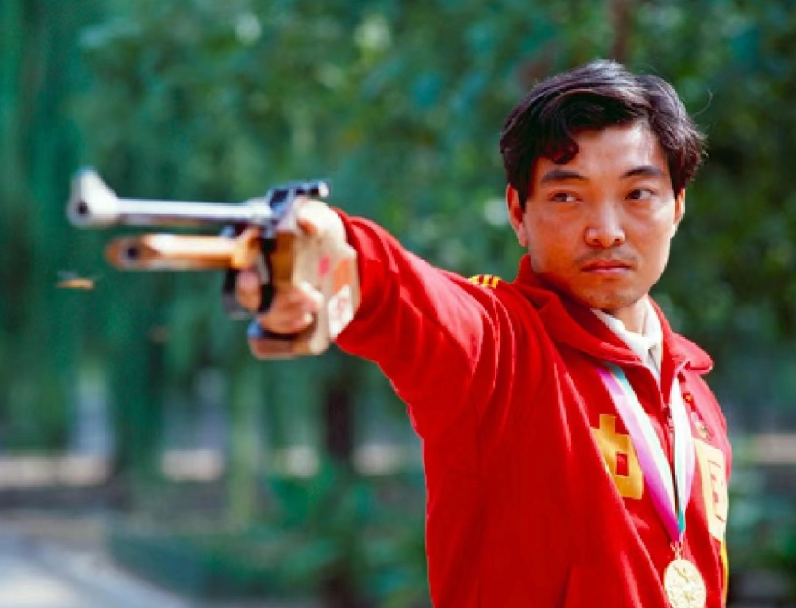
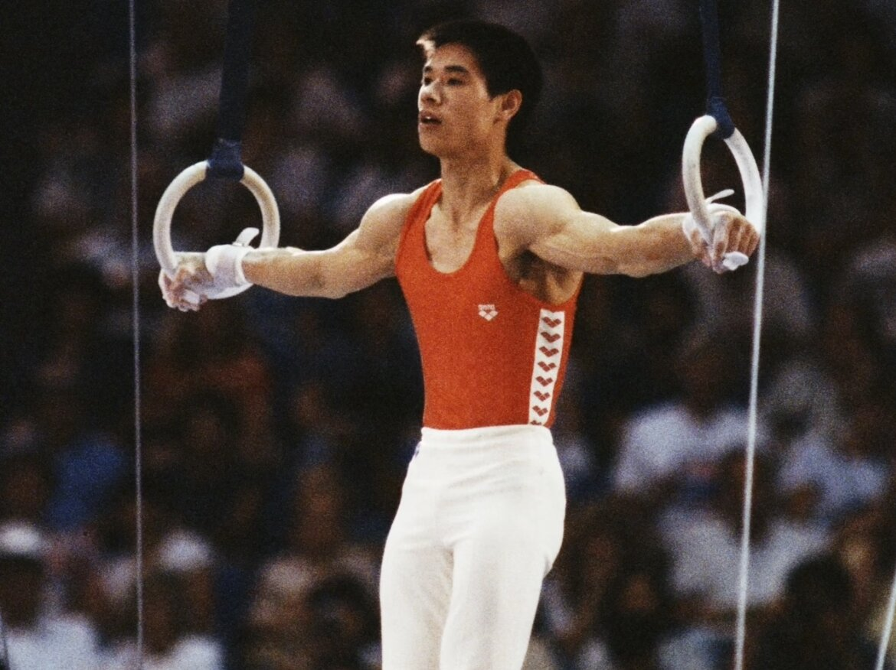
1984年洛杉矶奥运会,李宁一人独得自由体操、吊环、鞍马三枚金牌,外加两银一铜,成为当届获得奖牌最多的运动员,被誉为"体操王子"。
"一切皆有可能。"
连续两届奥运会包揽女单、女双双冠,开创"邓亚萍时代"。以1米55的身高征服世界乒坛,被誉为"乒乓女皇"。
"别人说我个子矮打不了球,我偏要打出个世界第一。"
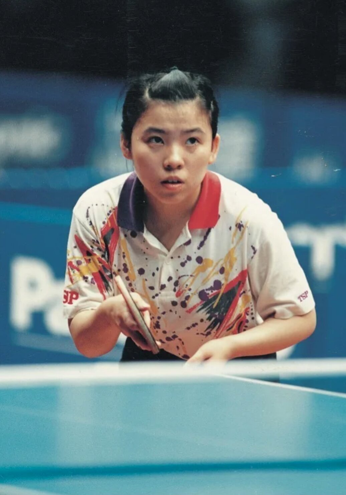
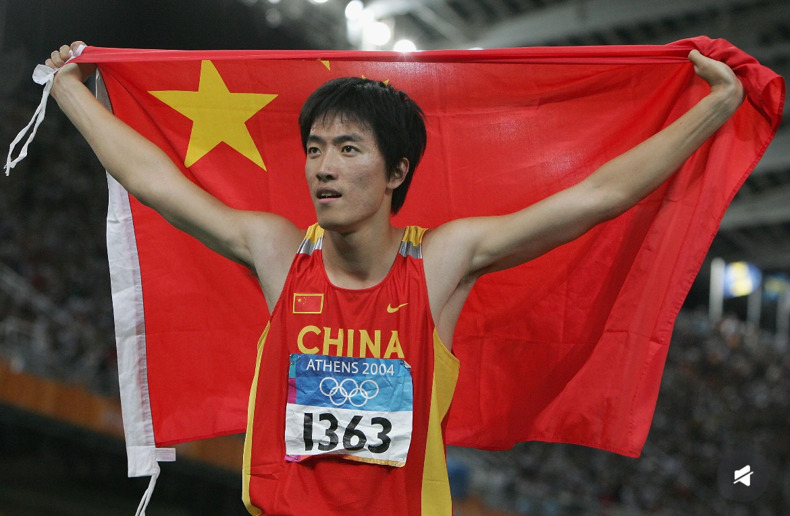
2004年雅典奥运会以12秒91平世界纪录夺冠,成为第一位在直道径赛项目上获得奥运金牌的亚洲男选手。2006年以12秒88打破世界纪录。
"谁说黄种人不能进奥运会前八,我今天就要证明给大家看,我是奥运会冠军!"
统治女子跳水十余年,四届奥运会收获4金2银。雅典、北京两届奥运会包揽女子3米板单、双人均金牌,技术动作堪称教科书级别。
"站上跳板,我就只想着怎么把动作做到完美。"
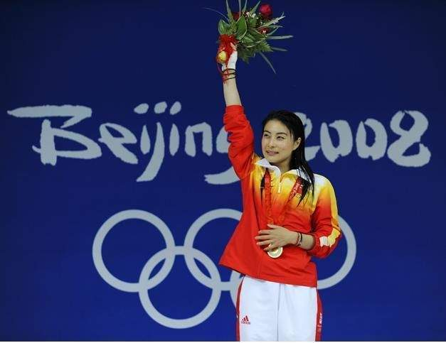
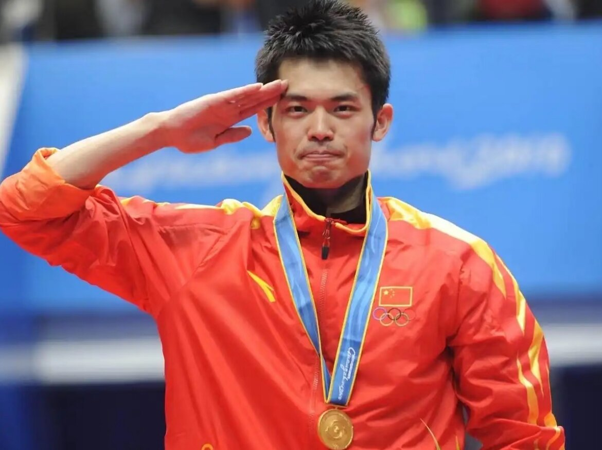
唯一完成双圈大满贯的羽毛球运动员。北京、伦敦两届奥运会男单卫冕冠军,以其凌厉的进攻风格和超强的心理素质著称。
"每一场比赛,我都要拼到最后一分。"
史上首位奥运六金得主,首位男子双圈大满贯。四届奥运征程,用实力诠释"龙队"传奇,被誉为乒乓球历史最佳运动员。
"只要心怀热爱,永远都是当打之年。"
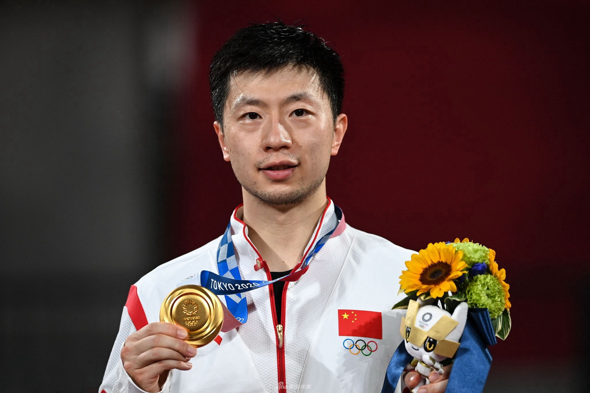
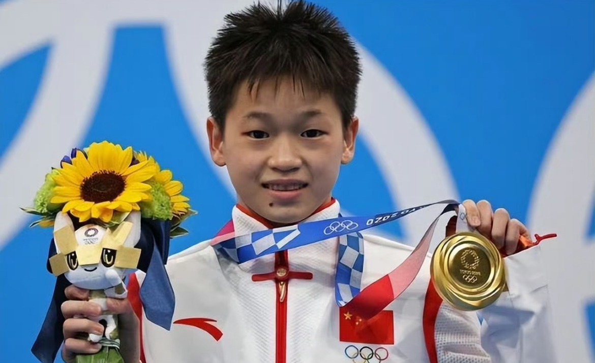
东京奥运会以14岁年龄首夺女子10米台冠军,三跳满分震惊世界。巴黎奥运会成功卫冕,成为中国跳水史上最年轻的奥运卫冕冠军。
"跳好每一次水,为国争光。"
北京冬奥会上,18岁的谷爱凌两夺金牌,成为首位单届冬奥会获得三枚奖牌的自由式滑雪运动员,开启中国冰雪运动新纪元。
"我想打破所有人对女子运动员的限制。"
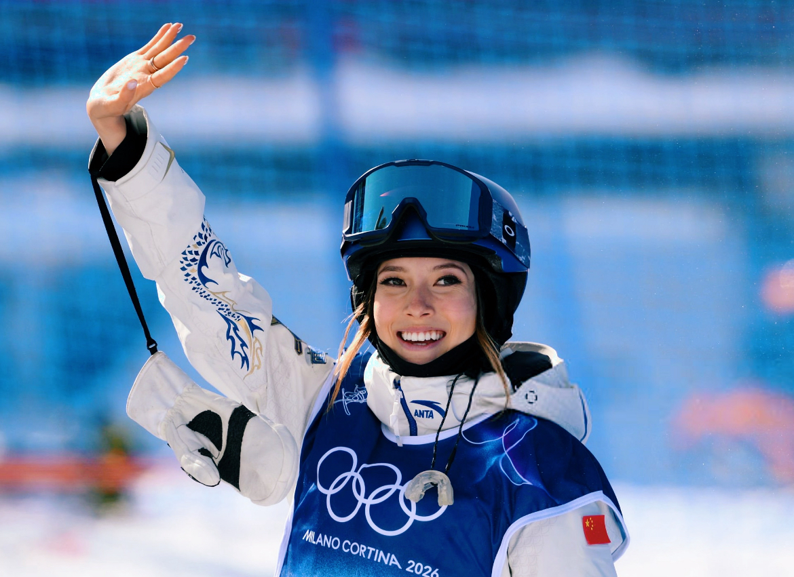
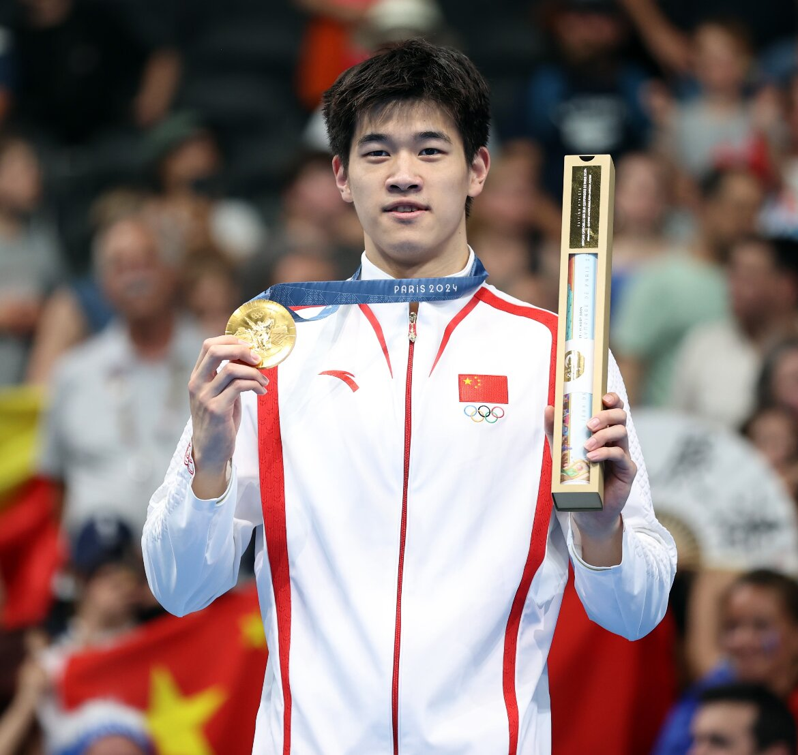
巴黎奥运会男子100米自由泳以46秒40打破世界纪录夺金,成为首位在该项目夺冠的亚洲选手。4×100米混合泳接力夺冠,终结美国队64年垄断。
"黄种人同样能在短距离自由泳站上世界之巅。"
巴黎奥运会网球女单冠军,成为首位夺得奥运网球单打金牌的亚洲选手。战胜世界第一斯瓦泰克等名将,创造中国网球历史。
"我要让世界看见中国网球的力量。"
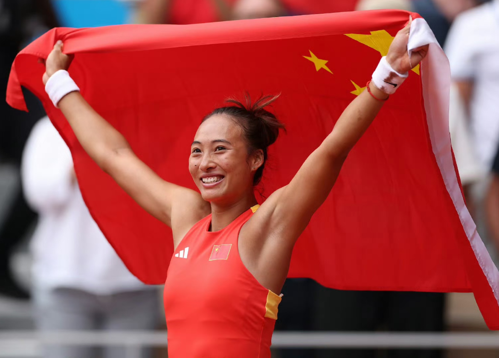
自许海峰奥运首金的惊天枪响,到谷爱凌驰骋雪场的耀眼绽放;
从邓亚萍驰骋乒坛的统治时代,到马龙包揽奥运六金的不朽传奇。
四十载风雨征程,一代代中国健儿以汗水为墨,书写属于中国体育的辉煌史诗。
他们镌刻时代荣光,承载民族骄傲,亦是后辈逐梦路上最鲜活的榜样。
前路漫漫,星光永续,下一段传奇,已然在路上。
数据之外,是人的故事;赛场之上,是时代的回响
GDP增长184倍,体育场地增长5倍。经济实力决定体育发展上限,为全面开花提供不可替代的物质底气。
后备基地从212所增至1003所,体育传统特色校达2.45万所。"金字塔"式培养体系为奖牌增长提供持续内生动力。
从《奥运争光计划》到《体育强国建设纲要》,四十年政策迭代为中国体育规划发展路径、提供制度保障。
跳水、举重、乒乓球等传统优势项目贡献超50%金牌,形成稳定基本盘。潜优势项目不断突破,拓展夺牌边界。
冰雪人才从2000人增至18.6万人,冬奥金牌从零到九。补齐中国体育最大短板,实现夏冬双奥均衡发展。
四十年奥运奖牌的变化,表面是金牌榜上数字的持续攀升,实质是一个古老民族在现代化进程中不断突破自我边界的精神缩影。从1984年的第一声枪响到2024年的劈波斩浪,一代代追梦人用青春接力,把中国体育的品牌从"零的突破"写到了"全域开花"。
这四十年的跨度,早已超越竞技层面。每一块奖牌的背后,都站着一位鲜活的追梦人--他们中的每一个,都是在各自的时代里用最极致的方式完成了对极限的追问、对不可能的反击、对家国期待的回应。体育之所以动人,从来不是因为金属的重量,而是因为它始终是人类最直观、最滚烫的精神表达。
而当我们将目光从赛场转向更广阔的疆域,会发现另一重更宏大的叙事正在展开:经济腾飞为逐梦者提供了前所未有的起跑线,制度创新为竞技体育铺设了持续迭代的轨道,人才体系的全面铺开让更多孩子有机会站上世界的舞台。体育强国的崛起,是一个民族整体跃升最真实、最生动的时代剪影。